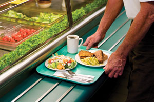
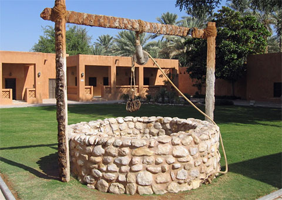

Welcome!
This website serves the Olin community surrounding the issue of energy, and poses a possible solution.
What Olin does

Olin does not provide trays
The showers at Olin use low-flow shower heads

Each of these doings help conserve water
Why solar?
Climate change is a serious problem. Flooding, forest fires, and hurricanes are increasing in frequency and magnitude worldwide1, sea levels have risen an average of more than eight inches since 18702, and global agriculture has already begun to suffer3.
Climate change is a serious problem. Flooding, forest fires, and hurricanes are increasing in frequency and magnitude worldwide1, sea levels have risen an average of more than eight inches since 18702, and global agriculture has already begun to suffer3. A recent report released by the IPCC4 (Intergovernmental Panel on Climate Change) puts to rest any controversy of the facts regarding human impact on climate change: We are largely responsible. This responsibility has been seen by many as a burden, inspiring denial, uncertainty, and indifference. Yet because we are responsible should be a comfort-it means we, as a species, have the power to make it right. The assumption that one person can't make a difference impedes progress. In the words of 20th century anthropologist Margaret Mead, "Never doubt that a small group of thoughtful, committed citizens can change the world; indeed, it's the only thing that ever has." Olin College is one such group of people, seeking to revolutionize engineering education throughout the world. If the purpose of engineering is to better the world, environmental issues should be a priority.
Olin prides itself in having an innovative curriculum and in being considerate of societal needs. The college's website states that Olin seeks to "redefine engineering as a profession of innovation encompassing... the consideration of human and societal needs". Additionally, the Honor Code-which every student signs-encourages students to "be receptive to change, supportive of innovation, and willing to take risks for the benefit of the community". Every member of Olin College, student and staff alike, is unified by a desire to support innovation and change, and maintain responsibility for the needs of society. By investing in the future of Olin and the planet, Olin shows respect and responsibility towards future generations and the practice of engineering, a practice that plays a significant role in deciding the outcome of our planets wellbeing.
read less
read more
What are we doing?
GrOW is proposing a Solar installation over parking lot A. This is similar to a car port installation with solar panels on top.
How can I help?
Sign the petition below! We will use the petition to show Olin and the Board of Trustees that the solar initiative has support from students and staff. Quite frankly, without support from Oliners, it will be difficult to convince the Board that this is a cause worth pursuing. At Olin, we do things together, or not at all.
Visit the GrOW facebook page and leave comments, and share the page on your facebook/twitter/tumbler accounts. The more people know about the initiative, the better.
Join the debate
here! Discussion and deliberation are key to understanding the needs of the Olin community surrounding the topic of solar energy on campus. We want to hear your ideas, reactions, concerns, and excitement!